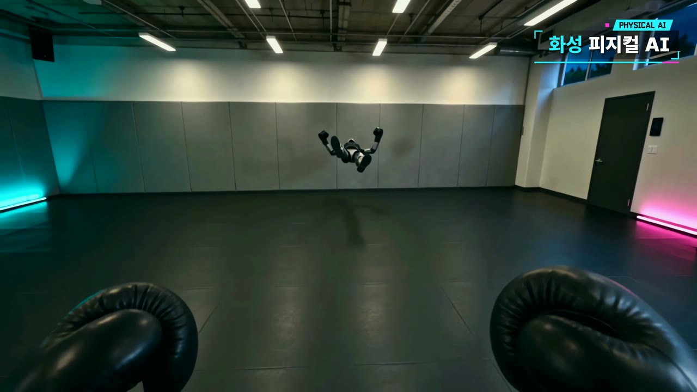
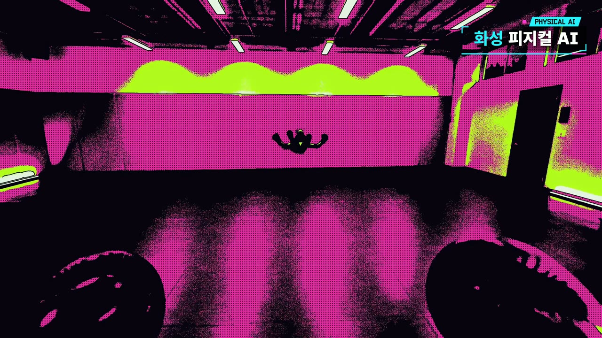
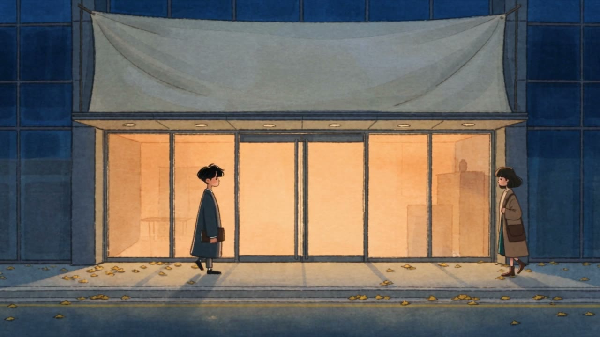
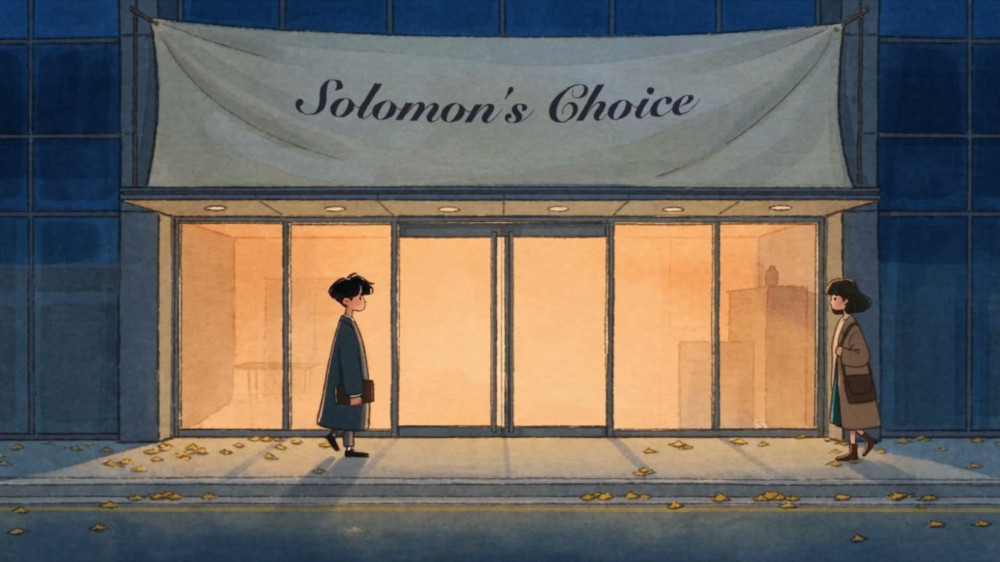

05-1화성시 공모전 「여긴, 화성」
타격하는 박에만, 잉크 프레임

BEFORE
AFTER2~3프레임만 실사를 형광 잉크 판화로 바꾸고 멈춥니다. 같은 효과는 반복하지 않습니다.
Codex + LLM Wiki로 기획 경험을 쌓아서,
언젠가는 제가 기획 안 해도 되게.
공공 영상도, 공모전도 매번 컨셉과 분위기가 다릅니다.
쌓은 경험이 다음 기획에 그대로 쓰이지 않았습니다.
뼈대는 제 창의성으로 세우고,
AI에게는 살 붙이는 조언만 듣습니다.
제 창의성
특이할 것 없이 Suno로 만듭니다.
awesome-suno-prompting 레포를 적용해서, 거의 손 안 대고.
팝핑댄서 출신이라 비트에 민감합니다.
드럼 하이햇 기준으로 장면을 쪼개 보면,
30씬으로 기획했어도 40씬은 들어가야 루즈해지지 않습니다.
남들과 다르고 싶습니다.
AI 슬롭은 왜 슬롭일까요?
일상에서 너무 많이 보이기 때문입니다.
프롬프트킷도 고민도 없이, 자연어 한두 줄로 뽑은 이미지.
슬롭은 거기서 시작합니다.
| 용도 | 도구 |
|---|---|
| 2D · 3D | Midjourney |
| 실사 | Seedream 5.5 Pro |
| 일본풍 2D 캐릭터 | 전부 뽑아 보고 결정 Grok Imagine · Midjourney · Kling · 나노바나나 · GPT |
드문 도구 + 공냥 프롬프트킷 + 나의 개성 = 희소성
슬롭이냐 아니냐는 이 단계에서 갈립니다.
스타일프레임 없이, 캐릭터 · 장소 · 소품
참조만 붙여서 바로 생성합니다.

BEFORE
AFTER2~3프레임만 실사를 형광 잉크 판화로 바꾸고 멈춥니다. 같은 효과는 반복하지 않습니다.
자연 다큐처럼 "관찰 지점 No.01" 카드를 띄워 어디인지 화면이 말하게 했습니다.
납품 전 4K 업스케일 + 그레인.
 BEFORE
BEFORE AFTER
AFTER AFTER
AFTER MG
MG기술명·지도·협력기관 로고처럼 틀리면 안 되는 정보는 AI에게 그리게 하지 않습니다.

BEFORE
AFTERAI가 쓰면 글자가 깨지니, 빈 현수막으로 뽑고 글자는 나중에 천에 스며들게 입힙니다.
AI는 장면을 계속 뽑고, 자르고 붙이는 판단은 사람이.
길이가 모자라면 정지·슬로모션 대신, 이미 뽑은 다른 테이크로 채웁니다.
concept_options.md
→ concept_lock.json잠금: 고른 안을 말한 원문style_bible.json잠금: 형식 자체 검사Suno 생성 → 사용자 선택잠금: 등록된 오디오storyboard.json잠금: 승인 원문| Logline | 한 문장 — 누가, 무엇을 원하고, 무엇이 막고, 무엇이 바뀌나 |
| Emotional arc | hook 0–3초 · build · peak (기억될 한 장면) · out (페이드 말고 해소) |
| Differentiator | 공모 주제의 뻔한 버전이 아닌 이유 |
| Must-avoid | 클리셰 · 사실 위험 · 거절된 룩 |
| Medium / AR / 길이 | 2D · 3D · 실사 · mixed / 16:9 / 60초 ≈ 15초 블록 4개 |
상류 파일이 바뀌면 그 단계와 하류 잠금이 전부 STALE
개정은 같은 파일을 고쳐 재잠금, 이전본은 _superseded/
제작 단계에서 프롬프트를 새로 쓰지 않음 — 소유 단계로 돌아감
mode: mv · contest · tourism · institution · shortform
| 필드 | 내용 |
|---|---|
| palette_hex | HEX 팔레트 |
| lighting | 광원 방향·질 · 시간대 · 실제 조명 · 대비 — 레시피 하나 |
| texture | 그레인 · 선 · 재질 · 렌더 방식 |
| lens_grammar | 기본 화각대 · 심도 · 카메라 움직임의 느낌 |
| forbidden_looks | 거절할 구체적 룩 |
| style_block_en | 영어 600자 이하 — 매체·렌더·팔레트·빛·질감·렌즈. 숏 내용 금지 |
| characters[] .identity_block_en | 영어 350자 이하 — 얼굴·머리·체형·의상·나이감. 표정·행동 금지 + sheet_ref_id |
| locations[] | 구조 · 재질 · 광원 · 고정 랜드마크 |
| resolution | 720p · 1080p |
style_block_en모든 영상 프롬프트의 STYLE 줄에 원문 그대로 — shelf-check가 일치 검사
identity_block_enIDENTITY 줄에 원문 그대로
sheet_ref_id03 이미지의 인물 시트 참조로 연결
palette_hex이미지 프롬프트 Color 섹션의 HEX
forbidden_looks프롬프트 · QC 거절 기준
| duration_sec | 프로젝트 길이 잠금과 같아야 함 (기본 15초) |
| purpose | 이야기·음악 구간에서 이 블록이 하는 일 |
| audio_route | silent · 현장음 · 대사 · music_reference |
| cast · location_id | 등장 인물 · 장소 |
| refs | 붙일 참조 이미지 ID |
| end_frame | 다음 블록이 이어받는 마지막 그림 |
| risks | 얼굴 · 텍스처 · 폰 화면 등 위험 속성 |
최상위 generation.model = Seedance 2.5면 2.5 규격, 없으면 2.0
| start · end_sec | 빈틈 없이 이어지는 초 구간 |
| shot_size | 통제 목록 9종 (extreme wide ~ insert) |
| angle | 통제 목록 10종 (eye level · low · overhead · pov …) |
| camera_move | 통제 목록 24종 (static · slow push in · tracking · orbit · fpv …) |
| lens · composition | 화각 · 화면 안 위치와 전경/배경 층 |
| action | 시작 → 행동 → 보이는 반응 |
| must_include | 프롬프트까지 살아남아야 할 구절 |
| copy_line | 근거 대사 — 장면은 대사 그대로 (인서트는 "(insert)") |
P2 잠금 → video_attributes.json 자동 생성 → 04 지식 라우터 입력
검색 — 장르·무드·용도·그루브·악기·보컬·BPM·형식으로 INDEX + 관련 1–3파일만
추출 — 가까운 패턴 2–5개에서 변수만
정리 — 아티스트·곡 이름 제거, 묘사어로 대체
조합 — 프롬프트 하나
변형 — 변수 몇 개만 바꾼 1개
기록 — 참고한 코퍼스 파일명
BGM 길이: Simple 대신 Custom, Duration을 초로 입력 — 목표값일 뿐
보컬: 한 명의 안정된 한국어 보컬, 자연스러운 발음·호흡
perfect · crystalline · ethereal 같은 형용사 나열 금지
인스트 인트로엔 허밍·속삭임 금지를 명시
고르기 · 다운로드는 사용자 (PENDING_USER_AUDIO)
| 섹션 | 내용 | 분량 |
|---|---|---|
| 1 Scene | 누가 · 무엇이 · 어디서 · 무엇을 — 핵심을 맨 앞에 | 60–120어 |
| 2 Camera | 시점 · 거리 · 렌즈 성격 (결과로 서술) | 15–30어 |
| 3 Lighting | 방향 · soft/hard · 그림자 · 림 (장비명 금지) | 10–25어 |
| 4 Color | 팔레트 + 색온도 + HEX 3–5개 | 10–20어 |
| 5 Texture | 매체 · 질감 · 표면 반응 | 10–20어 |
| 6 Text | (선택) 따옴표 카피 · 폰트 · 위치 | 0–25어 |
| 끝 | AR x:y 토큰 하나 |
포맷 B (단독 인물 화보): 피사체 → 얼굴 → 헤어 → 장르 → 장면·포즈 → 의상 → 구도 → 조명 → HEX → 질감 → AR, 350–450자 한 문단
부정문 대신 긍정형으로 다시 쓰기 — 모델이 부정어를 그린다
masterpiece · 8k · best quality 같은 옛 어휘 금지
카메라·조명 장비명 대신 결과 ("배경이 부드럽게 흐려짐")
수치는 박는다 — HEX · 켈빈 · key:fill 1:2
1줄 = 1컷 = 1호출, 그리드 금지
이상적 피부 대신 natural skin texture · visible pores · film grain
참조 1 = 프롬프트 1 = 이미지 1 — 그리드·연락 시트 금지
반복 인물은 승인된 인물 시트를 먼저, 생성 때 실제 첨부
Seedream 인물 시트: 2패널(정면 · 뒷모습 전신, 높이 85%) + "head and neck fully visible"
장소 참조에 소품 · 종이 여백 금지 — 영상으로 번진다
실제 장비 · 장소는 Commons 실사진을 Seedream 입력으로
시작프레임 · 스타일프레임은 만들지 않음 (10-29~)
| 작풍 잠금 | 계획된 매체와 다른 화풍이 섞이면 FAIL |
| 정체성 | 얼굴 윤곽 · 눈 간격 · 코 · 턱 · 머리 볼륨 · 나이감 |
| 역할 분리 | 같은 화면의 조연과 구분되는가 |
| 이야기 기능 | 정지 포스터가 아닌 원인 → 반응 |
| 동작 상태 | 던지기·변형은 단계별로 분리 |
| 물리 | 폰 화면 방향 · 손 · 목 연결 |
~07-03Claude · ChatGPT 웹에서 프롬프트 작성 → ChatGPT Image 2
07-06Codex imagegen (gpt-image-2)이 기본 경로
07-12공냥 키트를 모든 이미지 프롬프트의 기본 층으로
11-07Midjourney 사용 (공개 갤러리 허용)
11-10배분 확정 — 수묵·회화 = Midjourney, 사람·깔끔한 실사 = Seedream
| 용도 | 도구 | 비고 |
|---|---|---|
| 2D · 3D · 수묵 · 회화 | Midjourney | 작풍 참조 |
| 실사 · 인물 · 실제 장소·장비 | Seedream 5.5 Pro | 실사진을 입력으로 |
| 일본풍 2D 캐릭터 | 여러 모델 비교 | Grok Imagine · Midjourney · Kling · 나노바나나 · GPT |
| 포스터 · 도감 · 인포그래픽 | gpt-image-2 | 공냥 키트 포맷 A |
생성 실행은 Codex 이미지 레인, 결과는 프로젝트 media/ 레지스트리에 등록 후 image_qc
| 15 seconds, 3 shots: | 길이 잠금기본 15초, 프롬프트 사정으로 줄이지 않음 |
| STYLE: …스타일 바이블 원문… | 01-B style_block_en 그대로 |
| IDENTITY: …승인 인물… | 01-B identity_block_en 그대로 |
| References: @Image1 is the lead's face… | 참조 하나에 역할 하나"분위기용" 같은 느슨한 역할 금지 |
| Summary: one sentence… | 누가 · 어디서 · 무엇이 일어나나 한 문장 |
| Shot 1 (0-6s): medium, eye level, slow push. … | 준비 → 동작 → 반응 → 정착형용사 대신 보이는 사건 |
| SFX: … Sound: … No music. No subtitles. | 현장음만음악·자막은 후처리 |
| Consistency: …2–3 traits… | 인물 특징 2–3개 재명시긴 테이크 흔들림 방지 |
| End frame: … | 01-C end_frame — 다음 블록이 이어받는 구도 |
모델 입력은 영어만 · Runway 입력 10,000자 이하 · 길이 압축 금지 · 부정문은 소리·자막·화면 글자에만
카탈로그 33 → 최대 11섹션
14,000자brief · prompt · settings
refs · pack영어·NFC · 10,000자
Shot k (a-bs) · @ImageN13규칙 → 04-C2.0 ≤ 15초
2.5 ≤ 30초 · 2–8숏블록 입력 해시에 묶임사용자 release 1회백그라운드 · 종료코드만1fps 시트 + 사람 확대| produce 종료코드 | |
|---|---|
| 0 | 완료 · 미릴리스 |
| 2 | 사용자 확인 필요 |
| 3 | HOLD — 자동화 경고, 사용자만 해제 |
| 4 · 5 · 6 | 실패·유실 · 디스패치 거부 · 세션 상한 |
| QC에서 보는 것 | |
|---|---|
| 글자 | 옷 · 등판 · 소품 위 깨진 글자 |
| 시선 · 손 | 장비를 보는가, 손 논리 |
| 얼굴 | 서양인 얼굴 · 이상한 헤어 |
| 교체 | 같은 클립의 무인 구간·클로즈업으로 |
| 규칙 | 잡는 것 | 적용 대상 |
|---|---|---|
| smooth_skin | "매끈한 피부" 문구 → 플라스틱 AI 티 | 영상 · 이미지 |
| text_prop | 글자가 생기는 소품 → 가짜 한자·숫자 | 영상 · 콘티 |
| garment_text | 옷 · 물건 위 글자 → 깨진 글자 | 영상 |
| screen_content | 화면 내용 묘사 → 가짜 UI 글자 | 영상 · 콘티 |
| screen_summon | "화면은 비어 있다"도 화면을 부름 | 영상 |
| nasal_tube | 콧줄 묘사 → 산소 캐뉼라로 오인 | 영상 · 이미지 |
| foreign_office | 한국 단서 없는 사무실 → 외국 스톡풍 | 영상 · 콘티 · 컨셉 |
| start_frame | 스타일프레임 · 시작프레임 | 전부 |
| onscreen_text | 요청 없는 자막 · 지명 타이틀 · 라벨 | 영상 · 콘티 · 컨셉 |
| env_ref_props | 장소 참조 속 이야기 소품 | 이미지 |
| paper_margin | 참조 이미지의 종이 여백 · 테두리 | 이미지 |
| restraint_action | 과한 액션 · 거절된 클리셰 | 영상 · 콘티 |
| forced_metaphor | 자연 × AI 억지 메타포 | 콘티 · 컨셉 |
shelf-check · check · Claude 저작 단계에서 경고 · 의도된 예외는 블록 lint_allow로만 · 규칙마다 근거 메모리 파일이 붙어 있음
| 항목 | Seedance 2.0 | Seedance 2.5 |
|---|---|---|
| 길이 | 5–15초 | 5–30초 (Unlimited는 15초·720p) |
| 숏 수 | 최대 4 | 2–8 |
| 참조 | @ImageN | 최대 12장 |
| 프롬프트 형식 | 흐르는 서술 | 라벨 블록 (04-A) |
| 카메라 | 숏당 무브 하나 | 4초 넘는 비트 안 복합 무브 |
| 선택 | 기본 | 사용자가 명시할 때 |
경로: Runway 웹 UI (Aside) · Flow는 별도 합성형 분기 · 2026-07 기록상 Grok은 I2V 전용
~07standard_i2v — 컷마다 시작 프레임 이미지 → 영상
07-11No-I2V 모드 — 참조만 붙이고 연출은 프롬프트가
10-29시작프레임 없이 참조만이 기본
11-07Seedance 2.5 지원 — storyboard generation.model
11-11v5.1 — produce 백그라운드 · prompt_lint
| 작업 | 방법 | 기준 |
|---|---|---|
| 색보정 | Python · ffmpeg 스크립트 | 과한 부분부터 줄이기 · 컷 사이 톤 맞추기 |
| 정보 라벨 | 코드 오버레이 | 요청한 글자만 — 지명 타이틀 임의 삽입 금지 |
| 가사 자막 | demucs 보컬 분리 + Whisper | 보컬 시작 0.1초 전 · Noto Sans KR Bold |
| 효과 (승인) | FX 라이브러리 | 접촉 스파크 · 타이포 임팩트 1–3프레임 · 잉크 작화 6프레임 · 공간 전환 |
| 효과 (거절) | 얇은 HUD · 흐림·번짐 · 도형 오버레이 · 입술 마스크 · 같은 효과 반복 | |
| 합성 | multiply 블렌드 | 빈 현수막 천 위에 글자 (05-4) |
| 업스케일 | Real-ESRGAN animevideov3 ×2 | + lanczos 블렌드 · 그레인 → 4K |
| 설명 MG | 코드 · Blender · ffmpeg | 480p 미리보기 먼저 · 공공 톤 남색·금색 |
| 검사 | ffmpeg freezedetect | 렌더마다 |
| 누가 | 사용자 직접 — CapCut 레인은 10-16 퇴역 |
| AI 역할 | 장면을 계속 뽑고 원본을 바로 띄움 · 편집안은 요청 때만 |
| 길이 부족 | 정지 · 슬로모션 · zoompan 대신 이미 뽑은 다른 테이크 |
| 검사 | freezedetect=n=0.002:d=0.4 렌더마다 |
| 미리보기 | 전 구간 480p 먼저, 확정 후 고해상도 |
| 파일 | 편집물은 프로젝트 media/ 밖 edits/<slug>/ |
| 보관 | 진행 중 로컬 · 완료본 SSD |
프로젝트 media/에 등록되지 않은 파일이 있으면 미디어 감사가 실패해 image_qc · seedance · package 레인이 MEDIA_HARD_GATE로 멈춘다.
원문은 raw/에 그대로 두고, 검증·요약한 지식 페이지로 컴파일한다(Karpathy식 LLM Wiki). Codex와 Claude가 같은 위키를 읽고 쓴다. 압축·인계 직전에 캡슐을 남기고, 재사용할 교훈만 지식 페이지·시드·메모리로 승격한다.
Runway 하트 → 프로젝트 마감 때 1회 읽기 → proven_prompts.py → 위키 하트 프롬프트 페이지 → 라우터. 11-13 추가, 현재 0건.
| 순위 | 문서 | 소유 범위 |
|---|---|---|
| 1 | video-team-runtime/AGENTS.md | 레일 · 레인 순서 · 실행 예산 · 미디어 구조 · 게이트 · 안전 |
| 2 | seedance(25)-prompt-en 스킬 | 선택된 버전 하나의 프롬프트 규격 · Runway UI |
| 3 | video-team-policies | 세션 생성 승인 · 브라우저 오퍼레이터 |
| 4 | videodirector 스킬 | 이야기 · 연출 · 품질 기준 |
같은 규칙을 여러 문서에 복제하지 않는다. 본문은 소유 문서 한 곳, 나머지는 포인터. 프로젝트 예외는 docs/project_overrides.md에 조항 번호와 함께.